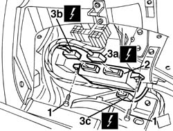

5505A18 multi-function control unit - r r
- Path
- Procedures > 55 ELECTRICAL EQUIPMENT > 5505 ELECTRICAL CIRCUIT FOR INSTRUMENTS/INDICATORS > 5505A multi-function components > 5505A18 multi-function control unit - r r
- Kind
- repair procedure (removal / refitting; the operation number is the code)
- Applies to
- all engines; all production periods
- Interactive page
- https://sloeber94.github.io/elrnDB-a156/en/#/3238380
Applies to: all engines; all production periods
 Removing
Removing
 Refitting
Refitting7040G24 switch for facia compartment light - r+r
7040G20 facia compartment light bulb holder - r+r
1. Undo the bolts.
2. Move the integrated service control unit slightly.
3. Disconnect the electrical connections (3a, 3b, 3c).
 | Name | Connector |
|---|---|---|
3a | Integrated services control unit |
| Name | Connector |
|---|---|---|
3b | Integrated services control unit |
| Name | Connector |
|---|---|---|
3c | Integrated services control unit |

Applies to: all engines; all production periods
Refitting
RemovingCheck that the control unit is undamaged.
Connect the electrical connections.
Refit the integrated service control unit.
Tighten the screws.
7040G20 facia compartment light bulb holder - r+r
7040G24 switch for facia compartment light - r+r
Check that systems controlled by the control unit are working properly.
Topics linked from this page (6)
- 7040A31 flap assembly - r r
- 7040G20 facia compartment light bulb holder - r+r
- 7040G24 switch for facia compartment light - r+r
- M40A Integrated services control unit ( REAR )
- M40B Integrated services control unit ( REAR )
- M40C Integrated services control unit ( FACIA )
Topics that link to this page (12)
- I20 FOG LIGHTS NOT WORKING
- I55 INTERIOR LIGHTS NOT WORKING / TIMED
- J20 REARSCREEN AND DOOR MIRROR DEFROSTING NOT WORKING
- M01 ELECTRIC FRONT WINDOWS / NOT WORKING
- M02 ELECTRIC FRONT WINDOWS / NOT WORKING IN AUTOMATIC MODE
- P10 CENTRAL LOCKING / NOT WORKING
- P11 CENTRAL LOCKING / NOT WORKING WITH REMOTE CONTROL
- 5020A12 heater casing - r+r with facia removed
- 5040C12 air conditioner housing - r r with facia disconnected
- 7005M40 front electric window system ecu - r+r following electrical wiring check
- 7005N40 central locking electrical control unit - r r folowing system check
- 7010N40 door lock electrical system control unit - r+r following system check